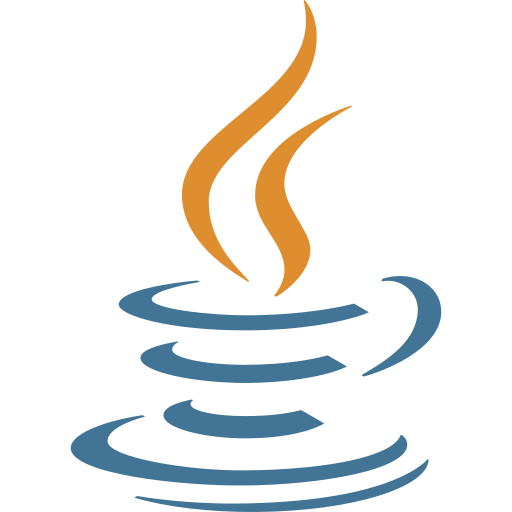

Resume
Pendidikan
-
SD Negeri Periuk 6 Kota Tangerang
2011 — 2017 -
SMP Negeri 2 Kota Tangerang
2017 — 2020 -
SMKN 4 Kota Tangerang
2020 — 2023Rekayasa Perangkat Lunak.
-
Universitas Sultan Ageng Tirtayasa
2023 — SekarangInformatika.
Pengalaman
-
Praktek Kerja Lapangan
Januari 2022 — Maret 2022Kantor Kecamatan Pasar Kemis.
Bahasa yang Dikuasai
HTML5

JAVA

C++